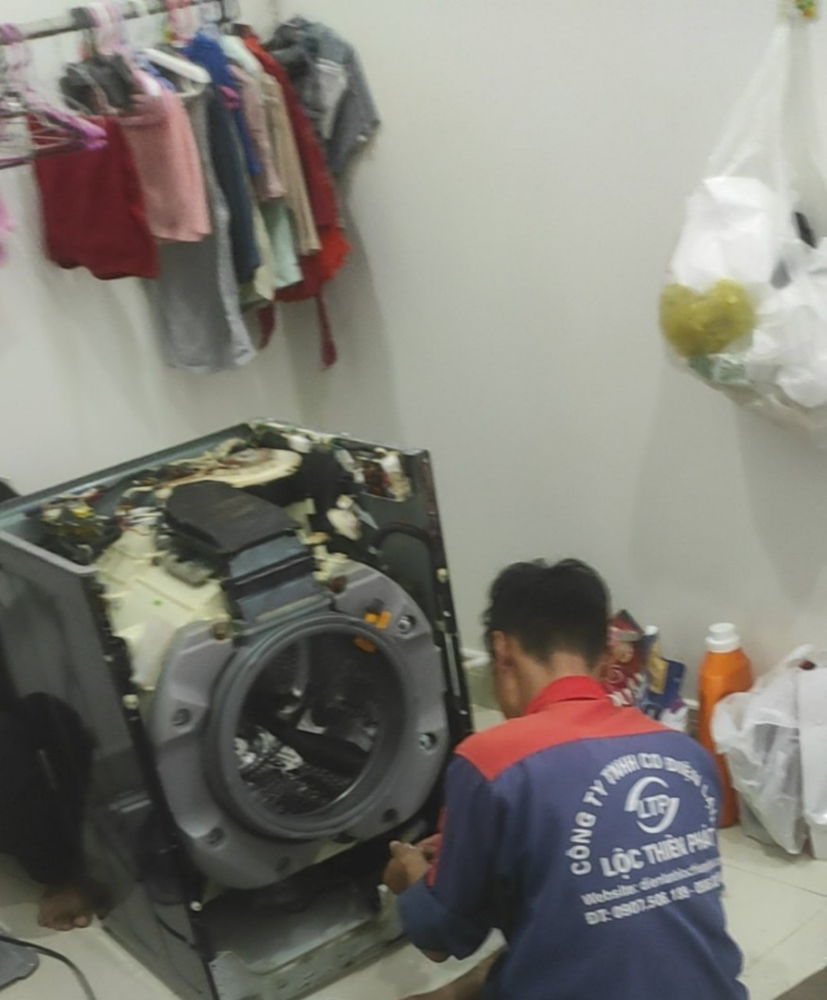
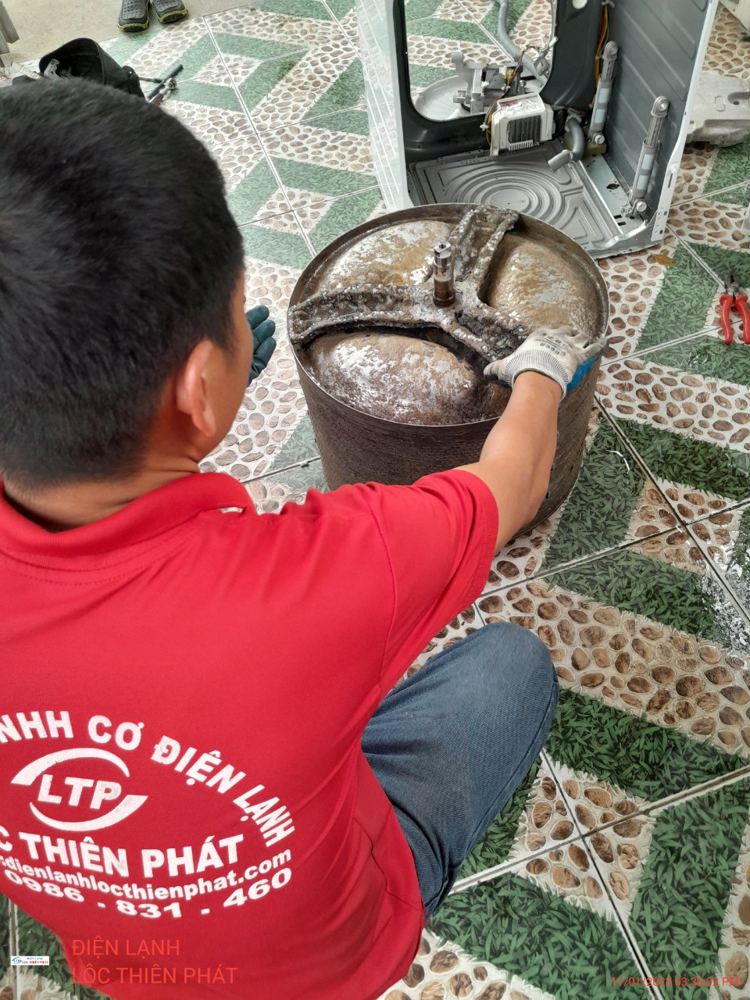

Máy giặt là một thiết bị không thể thiếu trong cuộc sống hiện đại, nhưng ít ai chú ý rằng việc bảo dưỡng và vệ sinh máy giặt cũng là một yếu tố quan trọng để đảm bảo hoạt động hiệu quả và kéo dài tuổi thọ của nó. Trong bài viết này, chúng ta sẽ tìm hiểu về tác động của việc không vệ sinh máy giặt định kỳ, những lợi ích của việc vệ sinh thường xuyên và những bước cơ bản để vệ sinh máy giặt một cách đúng cách. Bằng cách đọc bài viết này, bạn sẽ hiểu rõ hơn về tầm quan trọng của việc chăm sóc và vệ sinh máy giặt để duy trì hoạt động tốt và đảm bảo rằng máy giặt của bạn sẽ luôn hoạt động hiệu quả và bền bỉ trong thời gian dài.

Vệ sinh máy giặt định kỳ
I/ Tại sao lại cần vệ sinh máy giặt định kỳ?
Việc vệ sinh máy giặt định kỳ là rất quan trọng để đảm bảo hoạt động hiệu quả và kéo dài tuổi thọ của máy giặt. Dưới đây là một số lý do vì sao cần phải vệ sinh máy giặt định kỳ:
- Loại bỏ bụi bẩn và cặn bẩn: Trong quá trình sử dụng, máy giặt tiếp xúc với nhiều loại bụi bẩn, cặn bẩn và chất thải từ quần áo. Nếu không làm sạch định kỳ, các chất này có thể tích tụ và gây tắc nghẽn, gây hỏng hóc và ảnh hưởng đến hiệu suất máy giặt.
- Ngăn ngừa mùi hôi: Khi các tạp chất tích tụ trong máy giặt, chúng có thể gây ra mùi hôi khó chịu. Việc vệ sinh định kỳ giúp loại bỏ mùi hôi và giữ cho máy giặt luôn thơm tho.
- Bảo vệ bộ lọc và ống dẫn: Máy giặt thường được trang bị các bộ lọc và ống dẫn để loại bỏ cặn bẩn và chất thải. Nếu không vệ sinh định kỳ, các bộ phận này có thể bị tắc nghẽn, làm hỏng hoặc làm giảm hiệu suất của máy giặt.
- Tăng tuổi thọ và hiệu suất: Bằng cách vệ sinh định kỳ, bạn giúp loại bỏ tạp chất và duy trì các bộ phận của máy giặt trong trạng thái tốt nhất. Điều này có thể kéo dài tuổi thọ của máy giặt và đảm bảo rằng nó hoạt động với hiệu suất tối đa.
- Đảm bảo an toàn: Một máy giặt không được vệ sinh định kỳ có thể gây ra rủi ro an toàn. Ví dụ, nếu bộ lọc bị tắc nghẽn, nước có thể tràn ra ngoài và gây nguy hiểm cho người sử dụng. Việc vệ sinh định kỳ giúp giảm nguy cơ này và đảm bảo an toàn trong quá trình sử dụng máy giặt.
Vì những lý do trên, vệ sinh máy giặt định kỳ là một phần quan trọng trong việc bảo dưỡng máy giặt và đảm bảo hiệu suất và độ bền của nó trong thời gian dài.
II/Bao lâu vệ sinh máy lạnh /lần?
Thời điểm vệ sinh máy giặt phụ thuộc vào nhiều yếu tố, bao gồm tần suất sử dụng máy giặt, môi trường hoạt động và tình trạng bẩn của máy giặt. Dưới đây là một hướng dẫn tổng quan:
1.Tần suất sử dụng: Nếu bạn sử dụng máy giặt hàng ngày hoặc một số lần trong tuần, bạn có thể cần gọi thợ vệ sinh máy giặt khoảng 6 tháng một lần. Máy giặt được sử dụng thường xuyên hơn có khả năng tích tụ nhiều bụi bẩn và cặn bẩn hơn, do đó cần được làm sạch thường xuyên hơn.
2.Môi trường hoạt động: Nếu máy giặt của bạn hoạt động trong môi trường bẩn như nhà ở gần đường bụi, xưởng may, hoặc nhà có thú cưng, bạn có thể cần gọi thợ vệ sinh máy giặt thường xuyên hơn. Bụi, lông và bẩn từ môi trường này có thể dễ dàng xâm nhập vào máy giặt và ảnh hưởng đến hiệu suất hoạt động của nó.
3.Tình trạng bẩn: Nếu bạn nhận thấy máy giặt có mùi khó chịu, vết bẩn không thể loại bỏ hoặc hiệu suất giặt giảm đáng kể, đó có thể là dấu hiệu cần gọi thợ vệ sinh máy giặt. Đối với các vết bẩn khó làm sạch như vết ố vàng, mốc, hoặc cặn bẩn tích tụ lâu ngày, cần sử dụng các sản phẩm làm sạch chuyên dụng hoặc gọi thợ có kỹ năng vệ sinh máy giặt.
Tóm lại, không có một quy tắc cứng và nhanh cho thời gian vệ sinh máy giặt. Hãy quan sát tình trạng và hiệu suất của máy giặt của bạn để quyết định khi nào cần vệ sinh máy. Nếu bạn không chắc chắn, luôn tốt nhất là tham khảo hướng dẫn sử dụng của nhà sản xuất hoặc liên hệ với dịch vụ hỗ trợ khách hàng để biết thông tin cụ thể về việc bảo dưỡng và vệ sinh máy giặt của bạn.
III/ Quy trình bảo dưỡng máy giặt, bao gồm các bước chi tiết nhất:
1 .Chuẩn bị:
Tắt nguồn điện và đảm bảo máy không hoạt động.
Đặt các dụng cụ và vật liệu cần thiết, bao gồm các vật liệu làm sạch như nước, xà phòng, khăn mềm, bàn chải.
2.Kiểm tra tình trạng máy:
Kiểm tra xem có bất kỳ hư hỏng nào trên máy giặt hay không, chẳng hạn như nứt vỡ, vết rỉ sét, hoặc dây điện hỏng.
Kiểm tra các chức năng của máy giặt, chẳng hạn như chương trình giặt, vòi nước, bơm nước, van xả nước.
3.Ngắt nguồn điện và nguồn nước:
Rút phích cắm máy giặt khỏi ổ điện.
Đóng van nước cấp vào máy giặt để đảm bảo không có nước chảy vào trong quá trình bảo dưỡng.
4. Tháo lắp bộ phận ngoài:
Tháo bỏ các phụ kiện như ống nước cấp, ống thoát nước.
Tháo nắp máy và bộ lọc nước nếu có.
5. Vệ sinh bên trong:
Lấy lồng giặt và thùng giặt ra để vệ sinh sạch sẽ.
Sử dụng nước và xà phòng để làm sạch các bộ phận bên trong như lồng giặt, thùng giặt, bộ lọc nước, và các bộ phận khác.
Dùng bàn chải mềm để loại bỏ cặn bẩn và mảnh vụn có thể gây tắc nghẽn.
6. Vệ sinh bên ngoài:
Sử dụng khăn ướt và xà phòng để lau sạch bề mặt bên ngoài của máy giặt, bao gồm cả mặt trước và mặt sau.
Vệ sinh và lau sạch các núm vặn và bảng điều khiển.
7. Kiểm tra an toàn điện:
Kiểm tra dây điện và ổ cắm xem có bị hỏng hoặc nứt nẻ không.
Đảm bảo các dây điện không bị xoắn hoặc gãy đồng thời không có hiện tượng rò rỉ điện.
Kiểm tra các phần cứng và bộ phận điện khác trên máy giặt để đảm bảo không có hư hỏng hay lỗi kỹ thuật.
8. Kiểm tra cơ khí và bảo dưỡng:
Kiểm tra các bộ phận cơ khí như vòng bi, đai truyền động, bộ truyền động, và các cơ cấu khác để đảm bảo hoạt động mượt mà.
Nếu phát hiện bất kỳ bộ phận hỏng hoặc cần thay thế, thực hiện việc sửa chữa hoặc thay thế tương ứng.
9. Lắp ráp và kiểm tra lại:
Lắp các bộ phận vừa tháo rời trở lại vị trí ban đầu.
Kiểm tra lại các kết nối dây điện và ống nước, đảm bảo chúng được lắp đúng cách và không bị rò rỉ.
Khi hoàn thành, đảm bảo rằng các phụ kiện và các bộ phận đã được lắp đúng và chắc chắn.
10. Kiểm tra hoạt động sau bảo dưỡng:
Cắm máy giặt vào nguồn điện.
Mở van cấp nước và kiểm tra xem có hiện tượng rò rỉ hay không.
Bật máy giặt và kiểm tra các chức năng và các chương trình giặt để đảm bảo máy hoạt động bình thường sau quá trình bảo dưỡng.
Quy trình bảo dưỡng máy giặt có thể thay đổi tùy theo nhãn hiệu và kiểu máy giặt. Việc tuân thủ hướng dẫn của nhà sản xuất là rất quan trọng để đảm bảo an toàn và hiệu quả trong quá trình bảo dưỡng máy giặt.
.jpg)
Hình ảnh trước và sau khi vệ sinh
IV/Có nên gọi kỷ thuật chuyên nghiệp vệ sinh máy giặt?
Việc gọi kỹ thuật chuyên nghiệp để vệ sinh máy giặt là một lựa chọn khá hợp lý và có nhiều lợi ích. Hoàng Gia Điện Lạnh chia sẻ những lý do bạn có thể xem xét gọi kỹ thuật chuyên nghiệp:
Kiến thức và kỹ năng chuyên môn: Kỹ thuật viên chuyên nghiệp đã được đào tạo và có kiến thức sâu về máy giặt. Họ hiểu rõ về các bộ phận, hệ thống và quy trình vệ sinh một cách chi tiết và chuyên nghiệp.
Đảm bảo an toàn: Kỹ thuật viên đã được trang bị các công cụ, thiết bị và kiến thức để làm việc an toàn với máy giặt. Điều này giảm nguy cơ tai nạn và đảm bảo an toàn cho bạn và máy giặt.
Kiểm tra và bảo trì: Ngoài việc vệ sinh, kỹ thuật viên chuyên nghiệp cũng có thể kiểm tra và kiểm định các thành phần khác của máy giặt như động cơ, bơm nước, van và các hệ thống điện tử. Điều này giúp phát hiện sớm các vấn đề tiềm ẩn và đảm bảo máy giặt hoạt động ổn định.
Tiết kiệm thời gian và nỗ lực: Gọi kỹ thuật chuyên nghiệp giúp bạn tiết kiệm thời gian và công sức so với việc tự làm. Bạn không cần phải tìm hiểu chi tiết về máy giặt và quy trình vệ sinh, mà có thể tin tưởng vào kỹ thuật viên để thực hiện công việc một cách hiệu quả.
Tóm lại, gọi kỹ thuật chuyên nghiệp để vệ sinh máy giặt là một lựa chọn hữu ích để đảm bảo máy giặt hoạt động tốt và an toàn.
Bảng giá dịch vụ bảo dưỡng máy giặt của chúng tôi:
1 Máy giặt lồng ngang : 650.000 đ
2 Máy giặt lồng đứng : 300.000đ
Lưu ý: Đơn giá trên chỉ áp dụng cho dịch vụ bảo dưỡng máy giặt. Chi phí sửa chữa phát sinh sẽ được tính riêng dựa trên tình trạng và phạm vi sửa chữa cụ thể của máy giặt.
Quý khách vui lòng liên hệ với chúng tôi để biết thêm thông tin chi tiết và đặt lịch hẹn bảo dưỡng cho máy giặt của mình. Chúng tôi cam kết cung cấp dịch vụ chất lượng và chuyên nghiệp để đảm bảo máy giặt hoạt động tốt và bền bỉ trong thời gian dài.
Hotline : +84.918.092.848

Kỷ thuật thay chảng ba máy giặt
V/Những lưu ý khi sử dụng máy giặt:
Khi sử dụng máy giặt, có một số lưu ý quan trọng bạn nên xem xét:
1.Đọc kỹ hướng dẫn sử dụng: Trước khi sử dụng máy giặt, hãy đọc kỹ hướng dẫn sử dụng từ nhà sản xuất. Điều này sẽ giúp bạn hiểu rõ về các tính năng, chế độ và cách vận hành đúng cách của máy.
2.Phân loại quần áo: Chia các loại quần áo thành các nhóm tương tự nhau, ví dụ như quần áo trắng, màu sáng và màu tối. Theo cách này, bạn có thể chọn chế độ giặt phù hợp và tránh tình trạng phai màu hoặc nhúng màu.
3. Lượng quần áo hợp lý: Đảm bảo không quá tải máy giặt với quá nhiều quần áo. Điều này có thể ảnh hưởng đến hiệu suất giặt và gây căng thẳng cho máy.
4. Sử dụng lượng chất tẩy giặt đúng: Tuân theo hướng dẫn sử dụng của nhà sản xuất và sử dụng đúng lượng chất tẩy giặt. Việc sử dụng quá ít có thể không làm sạch đủ và sử dụng quá nhiều có thể tạo ra cặn bẩn hoặc gây hại cho máy giặt.
5. Kiểm tra túi áo và khóa bảo vệ: Trước khi đặt quần áo vào máy, hãy kiểm tra các túi áo để đảm bảo không có đồ vật nhỏ hoặc vật liệu dễ vỡ. Hãy chắc chắn rằng các khóa bảo vệ như khóa kéo hoặc khuy áo đã được cài đặt để tránh việc làm rách hoặc hỏng các quần áo khác trong quá trình giặt.
6. Chế độ giặt phù hợp: Lựa chọn chế độ giặt phù hợp với loại vải và mức độ bẩn của quần áo. Đối với quần áo nhạy cảm hoặc dễ nhăn, hãy sử dụng chế độ giặt nhẹ.
7. Vệ sinh máy giặt định kỳ: Ngoài việc làm sạch lồng giặt và bộ lọc, hãy kiểm tra và làm sạch các bộ phận khác của máy giặt như ống xả nước và bơm nước. Điều này giúp duy trì hiệu suất và độ bền của máy giặt.
8. Đặt máy giặt ở nơi thoáng mát: Hãy đặt máy giặt ở một nơi có độ thông gió tốt để giảm độ ẩm và ngăn chặn sự phát triển của nấm mốc.
9. Kiểm tra và bảo trì định kỳ: Thường xuyên kiểm tra các dây cáp và ống dẫn nước để đảm bảo không có sự hỏng hóc hoặc rò rỉ. Nếu bạn phát hiện bất kỳ vấn đề nào, hãy gọi một thợ chuyên nghiệp để kiểm tra và sửa chữa.
10.Tắt nguồn điện sau khi sử dụng: Sau khi sử dụng máy giặt, hãy tắt nguồn điện và tháo phích cắm ra khỏi ổ cắm. Điều này giúp tiết kiệm năng lượng và tránh nguy cơ điện giật.
Những lưu ý này sẽ giúp bạn sử dụng máy giặt một cách hiệu quả và đảm bảo độ bền của nó.
Hoàng Gia Điện Lạnh chuyên vệ sinh, sửa chữa, lắp đặt : Máy lạnh, máy giặt, tủ lạnh .Hỗ trợ nhanh tại nhà, báo giá trước khi làm. tư vấn khách hàng kỹ lưỡng và lựa chọn vật tư đúng chuẩn.
CÔNG TY TNHH CƠ ĐIỆN LẠNH Hoàng Gia Điện Lạnh
Địa chỉ ( Address) : 49 Lưu Chí Hiếu, P. Rạch Dừa, TP. Vũng Tàu
Mã số thuế ( Tax code) : 3603478401
Điện thoại: ( Tel) : +84.918.092.848